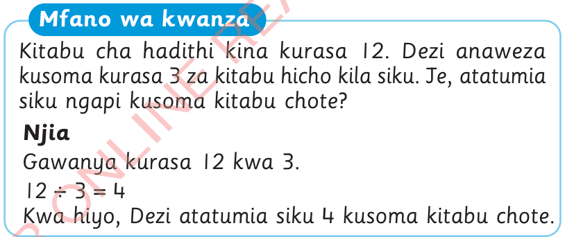
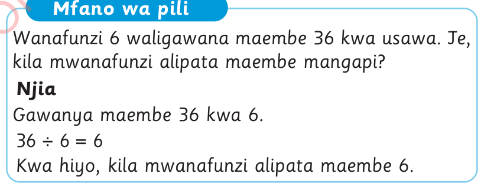

Tujifunze mafumbo yanayohusu kugawanya
Mafumbo yanayohusu kugawanya ni maswali yanayoandikwa kwa sentensi moja au zaidi.
Mfano wa kwanza

Kitabu cha hadithi kina kurasa 12. Dezi anaweza kusoma kurasa 3 za kitabu hicho kila siku. Je, atatumia siku ngapi kusoma kitabu chote?
Njia
Gawanya kurasa 12 kwa 3.
Kwa hiyo, Dezi atatumia siku 4 kusoma kitabu chote.
Mfano wa pili

Wanafunzi 6 waligawana maembe 36 kwa usawa. Je, kila mwanafunzi alipata maembe mangapi?
Njia
Gawanya maembe 36 kwa 6.
Kwa hiyo, kila mwanafunzi alipata maembe 6.